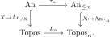
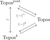

6.4. Localic topoi, Postnikov-completeness, and boundedness
Given an anima \(X\), we may form the truncations \(\tau_n X \in \An_{\leq n}\) for every \(n \geq 0\). These truncations fit into the Postnikov tower
Moreover, every anima is canonically the limit of its Postnikov tower; in fact, the functor \(\An \to \lim_{n} \An_{\leq n}\) sending \(X\) to the system \((\tau_n X)_n\) is an equivalence of categories.
The goal of this section is to study a closely related phenomenon in the world of topoi. Recall that every anima \(X\) gives rise to the slice topos \(\An_{/X}\). We saw in Proposition 4.38 that the assignment \(X \mapsto \An_{/X}\) defines a fully faithful functor
As we will see in this section, there are subcategories \(\Topos_n \subseteq \Topos\) of `\(n\)-localic topoi' for all \(n\), and left adjoints \(L_n\colon \Topos \to \Topos_n\). In the toposic situation, the comparison functor \(\Topos \to \lim_n \Topos_n\) will no longer be an equivalence. Instead, it admits fully faithful left and right adjoints:
The image of the fully faithful left adjoint \(\lim_n \Topos_n \hookrightarrow \Topos\) is given by the Postnikov-complete topoi.
The image of the fully faithful right adjoint \(\lim_n \Topos_n \hookrightarrow \Topos\) is given by the bounded topoi.
We now properly define these notions. A great reference for this material is [Barwick et al. 2018, Section 3.2].
6.4.1. Localic topoi
The \(n\)-localic reflection of a topos retains precisely its \((n-1)\)-truncated objects. Thus localic reflection plays, for topoi, the role played by truncation for animae. We first characterize the topoi which are already determined by this truncated information.
Let \(n \geq -1\). A topos \(T\) is called \(n\)-localic if for every topos \(S\) the induced functor
is an equivalence.
Let \(\Topos_n \subseteq \Topos\) denote the full subcategory spanned by the \(n\)-localic topoi.
For any topos \(T\), there exists an \((n,1)\)-category \(C\) with finite limits and a Grothendieck topology on \(C\) such that \(T_{\leq n-1} \simeq \Shv_{\tau}(C)_{\leq n-1}\).
The inclusion \(\Topos_n \hookrightarrow \Topos\) admits a left adjoint \(L_n\colon \Topos \to \Topos_n\) such that \(L_nT = \Shv_{\tau}(C)\) for all \((C,\tau)\) as in (1).
Proof
For \(T = \An_{/X}\) we have \(L_n(\An_{/X}) = \An_{/\tau_nX}\), providing a commutative diagram as follows:

So this is the sense in which \(L_n\) “generalizes” the truncation functor \(\tau_n\colon \An \to \An_{\leq n}\).
The finite-limit hypothesis in the site presentation is essential. If \((C,\tau)\) is an \((n,1)\)-site whose underlying category does not have finite limits, then \(\Shv_{\tau}(C)\) need not be \(N\)-localic for any \(N\). For example, [Lurie 2018, Counterexample 20.4.0.1] constructs a basis \(C\) for the topology of the Hilbert cube
such that the topos of sheaves on \(C\) for the induced topology is not \(N\)-localic for any \(N\). Its hypercompletion nevertheless agrees with the hypercompletion of the \(0\)-localic topos \(\Shv(Q)\).
Despite the previous warning, the presheaf category of an \((n,1)\)-category is still \(n\)-localic after hypercompletion. The proof requires the following auxiliary result:
Let \(T\) be a topos and let \(u\colon C \to T\) be a functor from a small category. Consider the following four statements:
The restriction functor
\[u^*\colon T \to \PSh(C), \qquad X \mapsto \Hom_T(u(-),X)\]is fully faithful.
\(T\) is generated under colimits by the image of \(u\).
Every \(X \in T\) is covered by the image of \(u\), i.e. there exist objects \(c_i \in C\) and an effective epimorphism \(\bigsqcup_i u(c_i) \twoheadrightarrow X\).
The counit \(u_!u^*(X) \to X\) is \(\infty\)-connected for every \(X \in T\).
Then we have implications (1) \(\Rightarrow\) (2) \(\Rightarrow\) (3) \(\Rightarrow\) (4). Moreover, if \(T\) is hypercomplete then all four statements are equivalent.
Proof
Let \(n \geq -1\), and let \(T\) be a topos such that every object is covered by \((n-1)\)-truncated objects. Then the map of topoi \(T \to L_n(T)\) induces an equivalence on hypercompletions:
Proof
6.4.2. Postnikov-completeness
Localic reflection records the truncated layers of a topos. Postnikov-completion asks instead whether compatible truncated objects can be assembled into an actual object. This is stronger than convergence of the Postnikov tower of each object: convergence gives full faithfulness of the comparison below, while Postnikov-completeness also requires essential surjectivity.
The Postnikov-completion of a presentable category \(C\) is defined as the limit
Here the transition functor \(C_{\leq n+1}\to C_{\leq n}\) is \(\tau_n\), and the limit is formed in presentable categories and colimit-preserving functors. We say that \(C\) is Postnikov-complete if the canonical functor \(\tau_*\colon C \to \widehat{C}, X \mapsto (\tau_n X)_n\) is an equivalence.
The functor \(\tau_*\) admits a right adjoint \(\lim_n C_{\leq n} \to C\) given by sending a system \((X_n)\) of \(n\)-truncated objects to their limit \(X = \lim_n X_n\). We see:
\(\tau_*\) is fully faithful if and only if the unit map \(X \to \lim_n \tau_n X\) is an isomorphism for all \(X \in C\), i.e. every object is the limit of its Postnikov tower. Note that this is necessary but not sufficient for \(\tau_*\) to be an equivalence.
\(\tau_*\) is essentially surjective if and only if every system \((X_n)\) satisfying the compatibility conditions arises as \((\tau_n X)\) for some \(X \in C\).
Proposition 6.61. ({cf. [Lurie 2018, Corollary A.7.2.8]})
If \(T\) is a topos, then \(\widehat{T}\) is a topos. For any Postnikov-complete topos \(S\), the morphism of topoi \(\widehat{T} \to T\) induces an equivalence
Proof
Every Postnikov-complete topos is hypercomplete.
Proof
We denote by \(\Topos^{\post} \subseteq \Topos^{\hyp} \subseteq \Topos\) the full subcategories of Postnikov-complete and hypercomplete topoi. These two inclusions have right adjoints sending \(T\) to \(T^{\hyp} = T_{\leq \infty}\) and \(T \mapsto \widehat{T}\).
6.4.3. Bounded topoi
Postnikov-completion is one reconstruction of a topos from its truncated layers. Bounded topoi arise from the opposite reconstruction: one first takes every localic reflection and then forms their inverse limit in \(\Topos\).
A topos \(T\) is called bounded if the canonical map \(T\to\lim_nL_nT\) is an equivalence. We write \(\Topos^b \subseteq \Topos\) for the full subcategory of bounded topoi.
Lemma 6.65. ([Lurie 2018, Lemma A.7.1.4])
The functor \(L_n \colon \Topos \to \Topos_n\) preserves colimits and small limits.
Proof
Proposition 6.66. ({cf. [Lurie 2018, Proposition A.7.1.5 and Corollary A.7.2.8]})
The functor \(L_*\colon \Topos \to \lim_n \Topos_n\) admits fully faithful adjoints on both sides.
A topos \(T\) lies in the image of the left adjoint if and only if it is Postnikov complete.
A topos \(T\) lies in the image of the right adjoint if and only if it is bounded.
Proof
We may summarize this in the following diagram:

Let us emphasize the distinctions among the completion conditions. Hypercompletion forces every \(\infty\)-connected morphism to be an isomorphism. Convergence of Postnikov towers says that each existing object is recovered from its truncations. Postnikov-completeness additionally says that every compatible system of truncated objects is realized by an object. Boundedness reconstructs the topos from the same truncated data through the opposite adjoint, by taking the inverse limit of its localic reflections.
References
- Clark Barwick, Saul Glasman, Peter Haine. Exodromy. 2018.
- Jacob Lurie. Higher topos theory. Ann. Math. Stud. 170, Princeton, NJ: Princeton University Press. 2009.
- Jacob Lurie. Spectral Algebraic Geometry. under construction (version dated February 2018), www.math.ias.edu/~lurie/papers/SAG-rootfile.pdf. 2018.